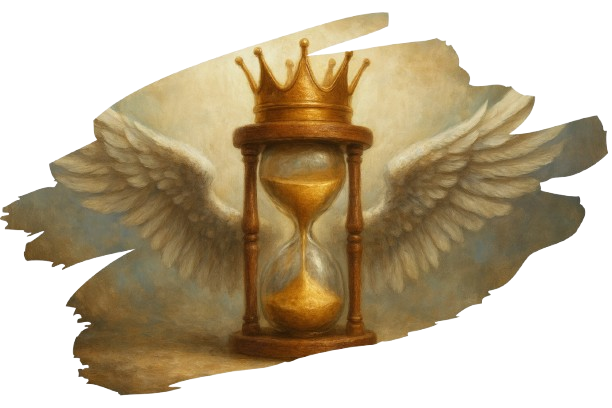

Accès restreint
Interface adaptive · Version responsive sécurisée
➜ Accès recommandé depuis un ordinateur ou une tablette.
Le calendrier vestigien a été initialement fixé au 28 août 2022 à 15h44. Pour inclure Nayroza et respecter son fuseau horaire, ce point zéro a été ajusté à 00:00 UTC0, qui restera le temps universel vestigien. Si la genèse du calendrier s’inspire de moments précis et précieux, comme l’arrivée de Nayroza, cette dimension personnelle ne représente qu’une partie de sa philosophie. L’essentiel du calendrier repose sur l’idée qu’il puisse être adopté par tous, partout dans le monde. Chaque jour vestigien a été pensé pour créer une temporalité commune, indépendante des calendriers locaux et des coutumes culturelles.

Nayroza a apporté une inspiration sur la valeur du temps vécu et des instants mémorables, mais cette influence personnelle reste minoritaire. L’élément central du calendrier vestigien est son ambition universelle : chaque individu, quel que soit son contexte culturel, peut utiliser les mêmes dates pour s’organiser et célébrer. Le calendrier n’est pas seulement un outil pour mesurer les heures ou les jours, il devient un repère commun, accessible à tous, et permettant à chaque personne de se synchroniser avec le reste du monde.
Le point zéro, initialement fixé à 15h44 le 28 août 2022 puis ajusté à 00:00 UTC+0, symbolise un repère concret et universel. Il sert avant tout à établir une base commune pour que chacun, partout sur Terre, puisse se référer aux mêmes jours et aux mêmes célébrations. L’influence de Nayroza enrichit cette base, mais elle reste secondaire : l’objectif majeur est que le calendrier vestigien devienne un outil de cohésion globale, utilisable par tous, indépendamment des traditions et coutumes locales.
Le calendrier vestigien valorise l’unité et la synchronisation mondiale. Chaque individu peut suivre les mêmes dates que le reste de la planète, ce qui permet de créer une cohérence temporelle universelle. Il n’est pas nécessaire de remplacer le calendrier culturel existant, mais plutôt de disposer d’une référence commune pour tous. Cette approche transforme le calendrier en un outil pratique et inclusif, renforçant le sentiment d’appartenance à une humanité partagée.
Plus qu’un simple repère temporel, le calendrier vestigien est un instrument qui rapproche les êtres humains. Peu importe l’endroit où l’on se trouve, la culture à laquelle on appartient ou les traditions que l’on suit, chaque personne peut consulter les mêmes jours et planifier ses événements de manière universelle. Cela crée un langage du temps partagé et permet à chacun de participer aux mêmes fêtes, jalons et repères, sans confusion ni décalage. L’objectif principal reste l’unité globale et l’accessibilité universelle du calendrier.
En se concentrant sur l’usage collectif, le calendrier vestigien devient un héritage à la fois pratique et symbolique pour l’humanité. Chaque date vestigienne est un point commun que tous peuvent partager, quelle que soit leur origine ou leur culture. Nayroza a apporté l’inspiration initiale, mais la vraie force du calendrier réside dans sa capacité à connecter tous les humains à travers un temps commun et compréhensible par tous.
Le calendrier vestigien a été conçu pour être avant tout universel et accessible à tous. 15% de son essence souligne l’importance du temps et des moments marquants, comme ceux liés à Nayroza, mais 85% de son objectif est de créer une référence commune que chacun peut utiliser, quelle que soit sa culture ou son calendrier traditionnel. Chaque individu peut ainsi se référer à une date vestigienne unique, partageant la même temporalité que le reste du monde. Le calendrier vestigien devient ainsi un outil universel, permettant à tous les êtres humains de se synchroniser, célébrer et se repérer ensemble, indépendamment des différences culturelles.
Chaque année vestigienne comporte 365 jours (Années normales) / 366 jours (Années bissextiles).
Date vestigienne : 0003
Aire actuelle : Aire des Premières Traces
Heure : 00:00